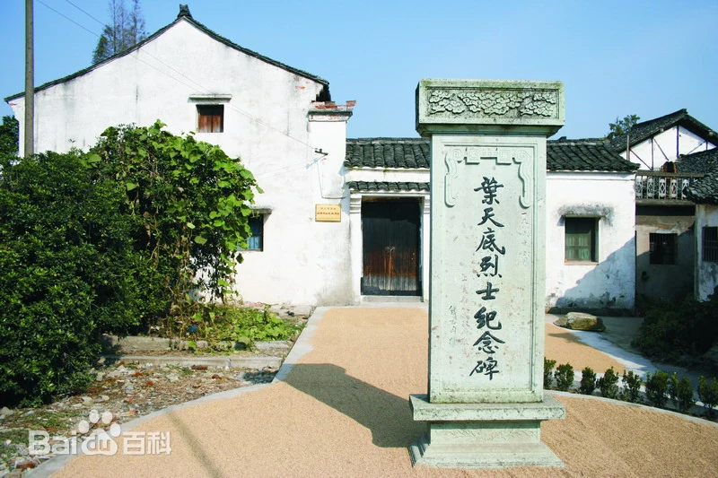
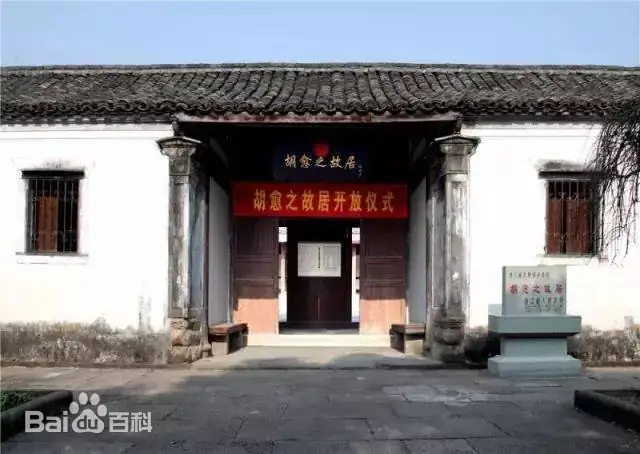

叶天底（1898-1928），原名叶天赐，浙江上虞丰惠镇谢家桥村人，中国共产党早期党员，浙东地区党组织的主要创始人之一。这位在江南水乡成长的革命者，用 29 年的短暂生命，完成了从思想觉醒到信仰殉道的壮丽历程，成为马克思主义在浙东实践的先驱者。
1923 年秋，身患肺结核的叶天底从上海回到故乡，看似养病的他，实则肩负着传播马克思主义、筹建党组织的秘密使命。故居阁楼的煤油灯，常常亮到深夜 —— 他在那里逐字逐句研读《共产党宣言》，将 “阶级斗争”“剩余价值” 等理论转化为 “地主为啥不种田却吃米” 的通俗问题，写进《上虞工农问答》小册子。为了让农民听懂革命道理，他在故居门前的晒谷场开设 “夜校”，用方言讲解 “工农联合起来求解放” 的真理，还编了朗朗上口的歌谣：“天上星多月不明，地上官多民不宁；唯有跟着共产党，才能跳出苦火坑”。短短半年，就有 100 多名农民加入夜校，其中 8 人成为首批中共党员，印证了 “马克思主义只有贴近群众才能生根发芽” 的深刻道理。


1925 年 2 月，中共上虞独立支部在故居正厅宣告成立，叶天底当选书记。他将故居打造成革命指挥中枢：正厅八仙桌成为支部会议的 “主席台”，西厢房的土炕是印刷传单的 “秘密工厂”，东厢房的木箱藏着党员名册与革命文件。为发动瓷业工人罢工，他拖着病体往返于上虞瓷厂与故居之间，在故居起草《罢工宣言》，提出 “增加工资、改善待遇” 的合理要求。当资本家勾结军警镇压时，他在故居召开紧急会议，制定 “轮流罢工、分散斗争” 的策略，最终迫使资本家答应工人条件。这场罢工的胜利，成为浙东工人运动的典范，生动体现了 “组织起来的无产阶级的强大力量”。
1927 年四一二反革命政变后，白色恐怖笼罩上虞。叶天底本可按上级指示转移，但他坚持要处理完党组织的善后工作。4 月 23 日清晨，国民党军警包围了故居，正在烧毁秘密文件的叶天底从容被捕。在狱中，敌人对他软硬兼施：先是许诺 “只要悔过，就委以县长之职”，被他怒斥 “共产党人可杀不可辱”；后又动用烙铁烫、竹签扎等酷刑，他始终咬紧牙关，未泄露半个字。狱友劝他 “暂且认下，留得青山在”，他却在墙壁上刻下 “生为革命人，死为革命鬼”，用行动诠释了马克思主义信仰的钢铁硬度。
1928 年 2 月，自知时日无多的叶天底，在狱中写下两封绝笔信。致母亲的信中，他流露出常人的温情：“儿不孝，未能为母养老送终，望母保重身体”；致兄长的信中，他则展现出革命者的豪迈：“革命事业未成，吾辈当有继往开来者。兄若念弟，当教侄辈继吾遗志”。这两封信没有豪言壮语，却将亲情与信仰、个人与革命完美融合，成为 “人的本质是社会关系总和” 的生动写照。2 月 8 日，叶天底在杭州陆军监狱刑场英勇就义，临刑前他整理好衣衫，面向家乡上虞的方向，昂首高呼 “中国共产党万岁”，那声音穿透刑场的阴霾，成为浙东革命史上不朽的绝唱。
如今，叶天底故居的煤油灯、印刷机、绝笔信手稿等展品，无声地诉说着这位革命者的信仰之旅。他的故事印证了马克思主义 “革命理想高于天” 的精神力量，也诠释了 “人民群众是历史创造者” 的深刻内涵 —— 正是无数像叶天底这样的革命者，用生命点燃了中国革命的火种，最终照亮了民族解放的道路。
返回